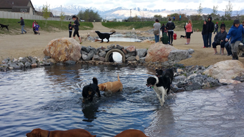
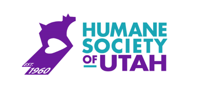
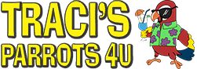

RENT A PET: FAVORITE LINKS:
Jump Menu
Dogs Meow | Paw Paws | Dayland Park | Utah Humane Society | Traci's Parrots 4U |

The Dogs Meow
This is one of our favorite local pet stores to shop at! We love supporting our local stores rather than big corporations. They are stocked with Helathy Products, Fun Stuff and loves of love!
Paw Paws: Self Serve Dog Wash and Boutique
After a nice day of playing with your rent a pet, your pup may have gotten dirty along the way! Our favorite place to bring our dogs to get cleaned is at a local store called Paw Paws! They have a self serve station where you just pay to clean your dog and they provide the materials all for a reasonable price! Once they're all cleaned you can shop around for a nice treat or toy too.

Dayland Dog Park
We want to make sure all dogs and pets are safe! The best dog park we've taken our dogs to to play and interact with others is the Dayland Dog Park! It's a fenced area so you can let your dog run free. There's a section for small dogs and big dogs so you don't have to worry about your loved one getting hurt. What a fun place to take your dog to!Check out this link for the address!

Humane Society of Utah
The Humane Society is a local - private organization that helps get lost/surrendered pets find a new home. They offer a clinic that helps pets get their necessary shots for a reasonable price. They are a great organization that we highly support and stand behind. Every pet should find a home, we can't adopt every pet but maybe you can find your forever buddy here! There's all sorts of different animals here too! From Dogs, Cats, Rabbits, etc. Remember to adopt, don't shop!
Click here for more information.
Traci's Parrots 4U
It's not everyday where you can find a local parrot store, for those interested here is one in the Valley! Traci's mission statement is all about caring and loving parrots so make sure you ask a lot of important questions before you think about adopting one. Traci also takes Parrots for those who can no longer handle the responsibilies of a Parrot.Check out Traci's website here!